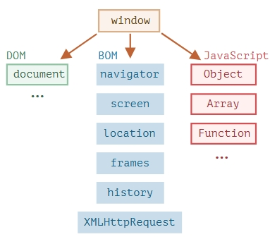

На картинке ниже в общих чертах показано, что доступно для JavaScript в браузерном окружении:

Как мы видим, имеется корневой объект window, который выступает в 2 ролях:
function sayHi() {
alert("Hello");
}
// глобальные функции доступны как методы глобального объекта:
window.sayHi();
А здесь мы используем window как объект окна браузера, чтобы узнать его высоту:
alert(window.innerHeight); // внутренняя высота окна браузера
Document Object Model, сокращённо DOM – объектная модель документа, которая представляет все содержимое страницы в виде объектов, которые можно менять. Объект document – основная «входная точка». С его помощью мы можем что-то создавать или менять на странице. Например:
// заменим цвет фона на красный,
document.body.style.background = "red";
// а через секунду вернём как было
setTimeout(() => document.body.style.background = "", 1000);
DOM Living Standard на https://dom.spec.whatwg.org
Объектная модель браузера (Browser Object Model, BOM) – это дополнительные объекты, предоставляемые браузером (окружением), чтобы работать со всем, кроме документа.
alert(navigator.userAgent)
alert(location.href); // показывает текущий URL
if (confirm("Перейти на Wikipedia?")) {
location.href = "https://wikipedia.org"; // перенаправляет браузер на другой URL
}
Стандарты:
описывает структуру документа, манипуляции с контентом и события, подробнее на https://dom.spec.whatwg.org .
Описывает файлы стилей, правила написания стилей и манипуляций с ними, а также то, как это всё связано со страницей, подробнее на https://www.w3.org/TR/cssom-1/.
Описывает язык HTML (например, теги) и BOM (объектную модель браузера) – разные функции браузера: setTimeout, alert, location и так далее, подробнее на https://html.spec.whatwg.org. Тут берётся за основу спецификация DOM и расширяется дополнительными свойствами и методами.
Кроме того, некоторые классы описаны отдельно на https://spec.whatwg.org/.Пожалуйста, заметьте для себя эти ссылки, так как по ним содержится очень много информации, которую невозможно изучить полностью и держать в уме.
Когда вам нужно будет прочитать о каком-то свойстве или методе, справочник на сайте Mozilla https://developer.mozilla.org/ru/ тоже очень хороший ресурс, хотя ничто не сравнится с чтением спецификации: она сложная и объёмная, но сделает ваши знания максимально полными.
Для поиска чего-либо обычно удобно использовать интернет-поиск со словами «WHATWG [термин]» или «MDN [термин]», например https://google.com?q=whatwg+localstorage, https://google.com?q=mdn+localstorage.